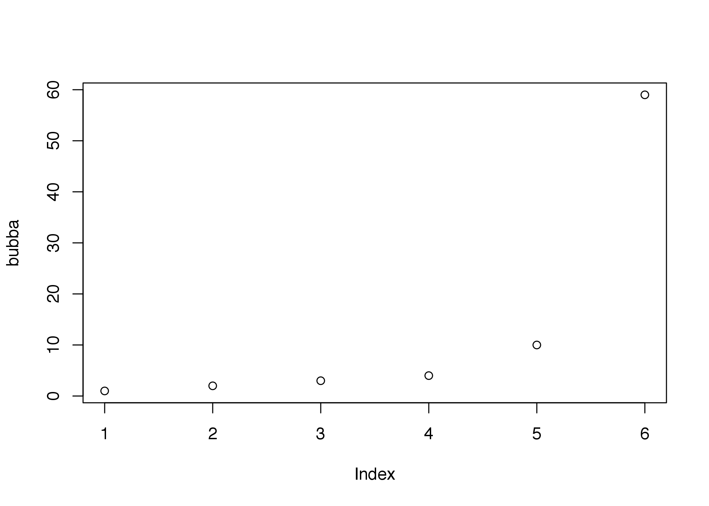
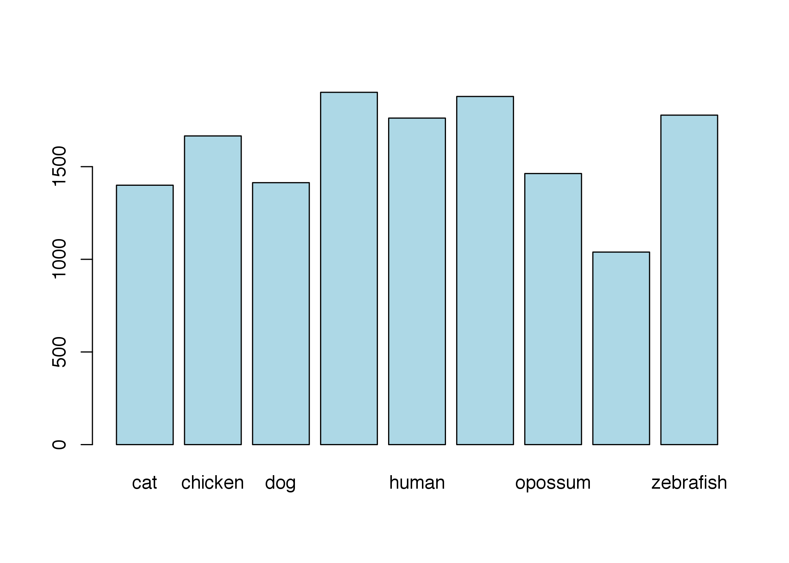

Introduction to R
Anton Enright & Dimitrios Vitsios
'12 June, 2017'
Introduction to R
About R
R is a free software environment for statistical computing. R is a free tool that you can download and use on a variety of platforms and environments. The R project R Webpage is a good place to learn more about R.
In this session we will focus on learning the basics of R so that we will be able to use BioConductor properly in the next session. R contains a vast collection of resources and tools many of which are beyond the scope of this session.
Getting Started
First load up RStudio, there should be a shortcut on your desktop. You should now see a window like this: 
This is the R terminal where we will type commands for both R and Bioconductor.
In this web page, sections like the following contain commands that you can copy and paste into the R terminal. The output you should expect to get from R will be presented like this (below).
setwd("/Users/dvitsios/Desktop/EMBO_2017/Courses-and-Practicals/EMBO_Greece_2017/Intro_R")
print("Hello Anton!")## [1] "Hello Anton!"To get help in R just type a question mark before the name of the command, for example, for the plot< function:
?plotFinally to quit R just type at the prompt:
quit()Assignment and Operations
Simple operations are easy to calculate in R, including multiplication, division, addition, subtraction etc. Here are some examples results below commands:
2+1
3-5
4*4
16/4
7.15 * sqrt(4)## [1] 3
## [1] -2
## [1] 16
## [1] 4
## [1] 14.3To save one of these results, we can assign it to a variable, using the “<-” symbol. We can then use these variables in further operations.
x <- 2+1
y <- 7.15 * sqrt(4)
x + y## [1] 17.3One of R’s benefits is that it can deal with many numbers at once. In order to tell R that we want to treat a series of numbers as one object, we can use the c command to “combine” objects into a list.
bubba <- c(1,2,3,4,10,59)To see what numbers are stored in bubba we can just type “bubba”:
bubba## [1] 1 2 3 4 10 59And now, we can perform operations on all of these numbers at once:
bubba + 1
bubba * 10## [1] 2 3 4 5 11 60
## [1] 10 20 30 40 100 590We can also use the many functions available in R:
sum(bubba)
mean(bubba)
max(bubba)
min(bubba)
sd(bubba)
range(bubba)
length(bubba)## [1] 79
## [1] 13.16667
## [1] 59
## [1] 1
## [1] 22.67524
## [1] 1 59
## [1] 6If you don’t know the proper command for a mathematical function you might want to use, you can either use the “Search help” option in the “Help” menu, or the “??” command:
??deviationIf you wish to work with only one of the numbers you can get access to it using the variable and then square brackets indicating the position in the series:
bubba[1] # This accesses the first element of bubba
bubba[5] # The Fifth Element, of bubba## [1] 1
## [1] 10Using the c command we can also store text (between quotes):
names <- c("Tom", "Anton", "James")
names[2]## [1] "Anton"You now have a list of numbers and are ready to explore. In the sections that follow we will examine the basic operations in R that will allow you to do some of the analyses required in the next practical.
Object types in R
These objects are simple lists, we will need later to use more complicated objects to store more complicated data.

Questioning the numbers
With R, we can “ask” things of the numbers. For instance, we might want to know which of the stored in bubba are larger than 2:
bubba
bubba > 2## [1] 1 2 3 4 10 59
## [1] FALSE FALSE TRUE TRUE TRUE TRUEWe get a list of TRUE / FALSE values (usually called “Logical”). They can be quite useful, as can be seen by the following two examples:
sum(bubba > 2)
bubba[bubba > 2]## [1] 4
## [1] 3 4 10 59- What do these commands do?
- How would you print out the numbers in bubba that are smaller or larger than the mean of bubba?
Basic Plotting and Graphing
Once your data is stored in a variable it is relatively easy to plot. To plot the values we just assigned simply type:
plot(bubba)
You should have a plot like the one above
You could also try other types of plot such as:
barplot(bubba)pie(bubba)
You might also try playing with some example data on flowers (iris) that come with R.
flowerdata <- iris # Reads in the included "iris" data and saves it as "flowerdata"It is quite useful to find out what kind of object you have, and what kind of data it contains:
class(flowerdata)## [1] "data.frame"A “data.frame” is a table. The flowerdata data.frame contains information about flowers, which we can open in an external editor, or simply view inside R by typing “flowerdata”.
edit(flowerdata) # Opens an external editorTo quickly find out the size of the table, we can use ask for its dimensions:
dim(flowerdata) # returns the dimensions of an object## [1] 150 5We now know that flowerdata contains 150 rows and 5 columns. We can use the square brackets to access subsets of the table. In order to access particular cells we need to specify the row number and then the column number separated by a comma. By leaving out either the row or the column number we can gain access to complete columns or rows.
flowerdata[11,2] # the element that is in row 11 and column 2## [1] 3.7flowerdata[11,] # row number 11## Sepal.Length Sepal.Width Petal.Length Petal.Width Species
## 11 5.4 3.7 1.5 0.2 setosaflowerdata[,2] # column number 2## [1] 3.5 3.0 3.2 3.1 3.6 3.9 3.4 3.4 2.9 3.1 3.7 3.4 3.0 3.0 4.0 4.4 3.9
## [18] 3.5 3.8 3.8 3.4 3.7 3.6 3.3 3.4 3.0 3.4 3.5 3.4 3.2 3.1 3.4 4.1 4.2
## [35] 3.1 3.2 3.5 3.6 3.0 3.4 3.5 2.3 3.2 3.5 3.8 3.0 3.8 3.2 3.7 3.3 3.2
## [52] 3.2 3.1 2.3 2.8 2.8 3.3 2.4 2.9 2.7 2.0 3.0 2.2 2.9 2.9 3.1 3.0 2.7
## [69] 2.2 2.5 3.2 2.8 2.5 2.8 2.9 3.0 2.8 3.0 2.9 2.6 2.4 2.4 2.7 2.7 3.0
## [86] 3.4 3.1 2.3 3.0 2.5 2.6 3.0 2.6 2.3 2.7 3.0 2.9 2.9 2.5 2.8 3.3 2.7
## [103] 3.0 2.9 3.0 3.0 2.5 2.9 2.5 3.6 3.2 2.7 3.0 2.5 2.8 3.2 3.0 3.8 2.6
## [120] 2.2 3.2 2.8 2.8 2.7 3.3 3.2 2.8 3.0 2.8 3.0 2.8 3.8 2.8 2.8 2.6 3.0
## [137] 3.4 3.1 3.0 3.1 3.1 3.1 2.7 3.2 3.3 3.0 2.5 3.0 3.4 3.0We can use different plots to look at the data:
plot(flowerdata[,2])hist(flowerdata[,2])boxplot(flowerdata, col=rainbow(5))In order to save some of these results as a PDF file, we can do the following:
pdf("flower_images.pdf")
boxplot(flowerdata, col=rainbow(5))
dev.off()This will send any image that is produced after the pdf function into a file, closing that file when dev.off() is called.
##Loading Data From a Text FileLets load in some external data from a text file.
The file genomes.txt should already be inside the course_material folder on your desktop. We can then load this file into R with the following:
genomes <- read.table("genomes.txt", row.names=1, header=TRUE)What does this file contain? Let us try out some more commands:
dim(genomes)## [1] 9 13colnames(genomes)## [1] "Genome.length" "Genes" "Transcripts"
## [4] "Coding" "Exons" "Introns"
## [7] "Transcripts.length" "Coding.length" "Exons.length"
## [10] "Introns.length" "UTR5.length" "UTR3.length"
## [13] "MultiTransGenes"rownames(genomes)## [1] "cat" "chicken" "dog" "drosophila" "human"
## [6] "mouse" "opossum" "worm" "zebrafish"head(genomes)## Genome.length Genes Transcripts Coding Exons Introns
## cat 4055847588 18377 18377 15048 194384 176007
## chicken 1100480441 17858 17858 16736 164238 146380
## dog 2531673953 24045 24045 19305 201708 177663
## drosophila 168736537 15178 15178 14141 60048 44870
## human 3090081323 36953 36953 21359 231277 194324
## mouse 2716965481 31804 31804 23497 217952 186148
## Transcripts.length Coding.length Exons.length Introns.length
## cat 25726822 24621516 25726822 827552084
## chicken 29749958 24332411 29749958 376951972
## dog 33990435 30675983 33990435 587007775
## drosophila 28857046 22370742 28857046 48449314
## human 65116403 33887121 65116403 1060714248
## mouse 59754111 34549583 59754111 873541323
## UTR5.length UTR3.length MultiTransGenes
## cat 0 0 NA
## chicken 905240 4349152 3901
## dog 246727 1310786 4524
## drosophila 2339329 3836127 3463
## human 4282528 20893311 11075
## mouse 3750716 17745067 8903genomes["mouse",]## Genome.length Genes Transcripts Coding Exons Introns
## mouse 2716965481 31804 31804 23497 217952 186148
## Transcripts.length Coding.length Exons.length Introns.length
## mouse 59754111 34549583 59754111 873541323
## UTR5.length UTR3.length MultiTransGenes
## mouse 3750716 17745067 8903summary(genomes)## Genome.length Genes Transcripts Coding
## Min. :1.003e+08 Min. :15178 Min. :15178 Min. :14141
## 1st Qu.:1.100e+09 1st Qu.:18377 1st Qu.:18377 1st Qu.:16736
## Median :2.532e+09 Median :24045 Median :24045 Median :19466
## Mean :2.095e+09 Mean :24227 Mean :24227 Mean :19319
## 3rd Qu.:3.090e+09 3rd Qu.:27928 3rd Qu.:27928 3rd Qu.:21359
## Max. :4.056e+09 Max. :36953 Max. :36953 Max. :24147
##
## Exons Introns Transcripts.length Coding.length
## Min. : 60048 Min. : 44870 Min. :25726822 Min. :22370742
## 1st Qu.:164238 1st Qu.:146380 1st Qu.:29018327 1st Qu.:24621516
## Median :194384 Median :176007 Median :31700945 Median :30462695
## Mean :178314 Mean :154086 Mean :38555971 Mean :28923326
## 3rd Qu.:217952 3rd Qu.:186148 3rd Qu.:43089692 3rd Qu.:33887121
## Max. :231277 Max. :195807 Max. :65116403 Max. :34549583
##
## Exons.length Introns.length UTR5.length
## Min. :25726822 Min. :3.213e+07 Min. : 0
## 1st Qu.:29018327 1st Qu.:3.770e+08 1st Qu.: 246727
## Median :31700945 Median :5.870e+08 Median : 905240
## Mean :38555971 Mean :5.824e+08 Mean :1569940
## 3rd Qu.:43089692 3rd Qu.:8.735e+08 3rd Qu.:2339329
## Max. :65116403 Max. :1.061e+09 Max. :4282528
##
## UTR3.length MultiTransGenes
## Min. : 0 Min. : 3357
## 1st Qu.: 1310786 1st Qu.: 3792
## Median : 3836127 Median : 4288
## Mean : 6351649 Mean : 5723
## 3rd Qu.: 6916984 3rd Qu.: 7110
## Max. :20893311 Max. :11075
## NA's :1A data frame can be considered as a simple table. How do we add a new column? Lets make a column with average transcript lengths for all available genomes. We can then plot the results with a simple barplot function.
genomes$Average.transcript.length <- genomes$Transcripts.length/genomes$Transcripts
barplot(genomes$Average.transcript.length, names.arg=rownames(genomes), col="lightblue")
Exercises
- Make pie charts of exon versus intron length in each species (shown below)
- Calculate length of an average human intron.
- Which animal genomes have less than 20000 coding sequences?
- How many exons per gene are on average for each of the available species?
Lets make pie charts of exon vs intron total length for all genomes.
There are nine species, so we have to divide the plot into 9 parts.
par(mfrow = c(3, 3))
for (species in rownames(genomes)) {
print(species)
pie(c(genomes[species,"Coding.length"],genomes[species,"UTR5.length"],genomes[species,"UTR3.length"]), main=species, labels=c("Coding","UTR5","UTR3"))
}## [1] "cat"## [1] "chicken"## [1] "dog"## [1] "drosophila"## [1] "human"## [1] "mouse"## [1] "opossum"## [1] "worm"## [1] "zebrafish"
What percentage of genes has splice variants?
Use the function cor.test to test whether there is correlation between genome size and intron length. What happens when we eliminate the cat genome? (hint, use “genomes[-1,]” instead of “genomes”)